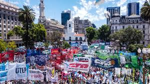
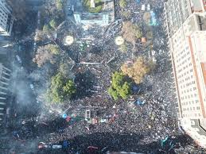

 +7
+7
Concentración en Plaza de Mayo
Convocatoria por memoria y justicia. Asistencia de múltiples organizaciones y gran participación ciudadana en Plaza de Mayo. La movilización se desarrolló de forma pacífica, con presencia de medios de comunicación y agrupaciones sociales.
Fuente:
Prensa